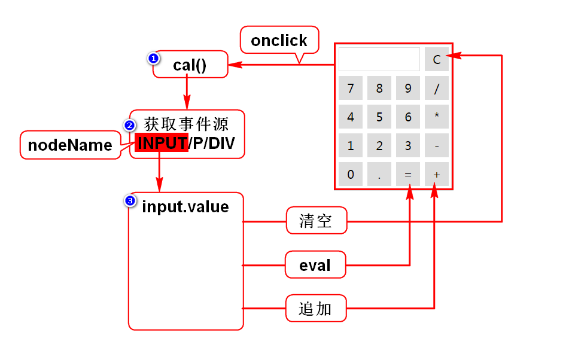

一.自定义对象
1.直接量对象(JSON)
{"name":"zhangsan","age":25}
{}代表一个对象,包含多组键值对.
通常key是字符串,value是任意类型的数据.
2.构造器(首字母大写的函数)
2.1内置构造器
特定:Date,Array
通用:Object
2.2自定义构造器
定义一个首字母大写的函数
声明需要调用者传入的参数
将传入的值保存在此对象上
二.事件
1.事件概述
1)什么是事件
就是用户的行为/动作,就是js被调用的时机.
2)事件的分类
鼠标事件
键盘事件
状态事件:某条件达成时自动触发.
2.事件定义
1)直接定义事件
优点:简单直观
缺点:耦合度高
2)动态绑定事件
优点:耦合度低
缺点:麻烦不直观
3)取消事件
return false
3.事件对象
1)什么是事件对象
在某些案例中需要获得鼠标坐标,键盘按键等信息.
这些信息可以从事件对象获得.
实际上,在事件触发时,浏览器会创建1个对象,用来封装这些信息.
事件对象是由浏览器创建的,封装了事件相关的所有信息.
2)如何获得事件对象
直接定义事件时
在调用函数时传入关键字event
在函数声明时接收此值
动态绑定事件时
调用函数时,浏览器会自动传入event
在函数声明时接收此值
4.事件机制
1)冒泡机制
事件是由内向外传播的
2)停止冒泡
利用事件对象的API
3)作用
用来简化事件的定义
4)事件源
事件发生的具体位置,事件的来源
通过事件对象可以获得事件源
5)计算器案例
